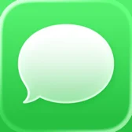
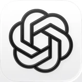
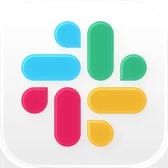
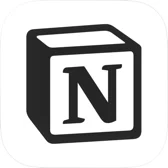
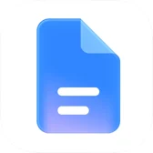
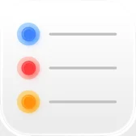
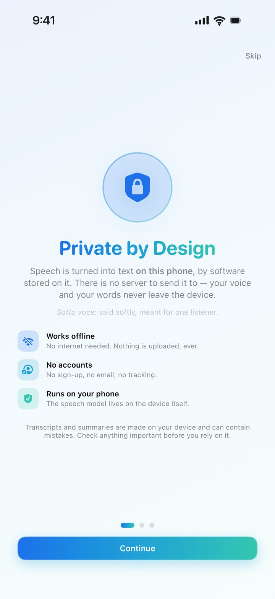
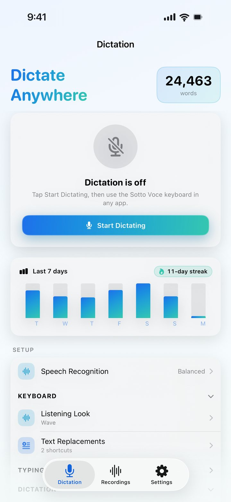
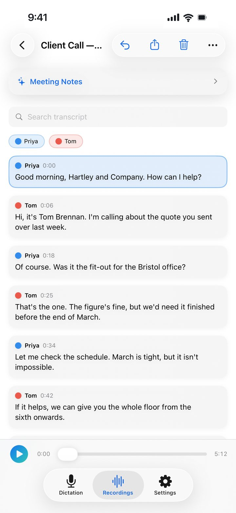
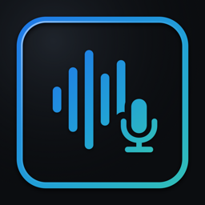

Private dictation for iPhone
Your voice, typed. On your phone, and nowhere else.
Sotto Voce is a dictation keyboard for iPhone. Talk in any app and your words appear as you speak, turned into text by the phone in your hand. Nothing is uploaded, there's no account, and it works offline.
- Free for 1,000 words a week
- Works offline
- No account
- iOS 26
Works wherever you type

Messages- Gmail
- Notes
- Telegram
- X

ChatGPT
Slack- Teams
- Outlook
- Discord

Notion
Google Docs
Reminders
…and any app where a keyboard comes up.
How it works
Set it up once.
Then just talk.
-
Add the keyboard
In Settings › General › Keyboard, add Sotto Voce and allow Full Access. That's how the app hands your words to the keyboard, on the phone.
-
Tap Start
In any app, switch to Sotto Voce and tap Start. The first time in a session, the app opens for a moment to claim the microphone, because iOS doesn't let keyboards use it.
-
Talk
Your words are typed as you speak, and the keyboard moves with your voice so you can see it heard you. Tap anywhere on it to stop.

Privacy
Nothing leaves the phone.
Most dictation apps send your voice to a server to be transcribed. That's a recording of you, on someone else's computer, tied to an account. Sotto Voce turns speech into text on your iPhone, so there's nothing to leak, hand over or sell.
on your iPhone
any app
No server in the loop
- Speech engines
- Apple's on-device recogniser, or NVIDIA Parakeet running through Core ML. You choose.
- Network
- One kind of request: a one-way download of model files from Hugging Face. None of your audio or words go with it.
- Account
- None. No sign-up, no email, no analytics, no tracking.
- Offline
- Keeps working in airplane mode, underground, or anywhere without signal.
Listening looks
Watch it listen.
A keyboard you talk to should show it's hearing you. Pick the look you like; each one moves with your voice, so you know it caught the sentence without reading it back.
WaveLayered waves across the keyboard, in the gradient of your chosen colours.
Drawn live with the same maths the app uses.
In the app
Every word counted.
Recordings, too.


Compare
Coming from Wispr Flow?
Both put a dictation keyboard on your iPhone. The difference is where your voice goes to become text.
See the full comparisonPricing
Free to start. Cheap to keep.
Dictate up to 1,000 words a week for free, with no account and no card. If you dictate more than that, Pro removes the limit.
Free
£0
- Up to 1,000 words a week through the keyboard
- Every listening look
- Recordings and transcripts, not counted against the limit
- Everything on the device, as always
Sotto Voce Pro
No weekly limit. Everything else is the same.
UK prices. In the US: $2.99 a month, $19.99 a year or $79.99 for life. The App Store shows the price in your currency before you buy, and subscriptions are managed in your Apple Account.
Questions
Questions people ask.
Is there a dictation app for iPhone that works offline?
Yes. Sotto Voce turns speech into text on the iPhone itself, so it works with no signal or in airplane mode once its speech models have downloaded. It types into any app through its own keyboard.
Does Sotto Voce upload my voice?
No. Your voice is transcribed on your iPhone and is never uploaded, never stored on a server and never used to train anything. There is no account, no analytics and no tracking. The only network request is a one-way download of the speech model files.
What is a private alternative to Wispr Flow on iPhone?
Sotto Voce is a dictation keyboard for iPhone that turns speech into text on the phone, where Wispr Flow transcribes on its servers. It works offline, needs no account, and Pro costs £2.99 a month or £19.99 a year. See the full comparison.
How is it different from the iPhone's built-in dictation?
iOS has dictation built in, and on recent iPhones much of it runs on the device too. Sotto Voce adds a keyboard that visibly reacts while it listens, with four looks to choose from; background noise removal before a word is transcribed; a choice of speech engine, including NVIDIA Parakeet; a list of recent dictations; and recordings transcribed with each speaker labelled.
How much does Sotto Voce cost?
It's free to download and free for up to 1,000 words a week, with no account or card. Sotto Voce Pro removes the weekly limit: £2.99 a month, £19.99 a year with the first 7 days free, or £74.99 once for life. In the US it's $2.99, $19.99 or $79.99.
Does it work on Android, Mac or Windows?
No. Sotto Voce is an iPhone app and needs iOS 26. Summaries of recordings also need an iPhone with Apple Intelligence.
Which languages does it support?
Sotto Voce is designed and tested for English.
Why does the keyboard ask for Full Access?
An iPhone keyboard needs Full Access to receive the text that the Sotto Voce app transcribes. It isn't used to send anything anywhere; there is nowhere for it to go. More on Full Access.

Said softly, meant for one listener.
Sotto voce is Italian for “under the voice”: spoken quietly, for one person to hear.
Setting it up? See Support.